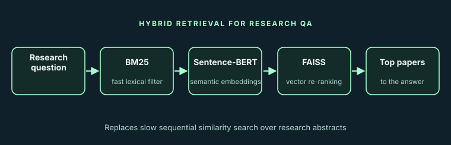

Challenge
Computing similarity sequentially across all research abstracts made query responses slow.
NLP · Research Assistant under Prof. Philipp Koehn (Johns Hopkins University) · May – Sep 2023
Speeding up a research question-answering system with a two-stage hybrid retrieval pipeline.

Computing similarity sequentially across all research abstracts made query responses slow.
Implemented a hybrid architecture: BM25 for fast initial filtering, then Sentence-BERT embeddings stored in a FAISS vector index for semantic re-ranking.
Faster response times while still returning relevant papers within the top results.
Credits: Research assistantship. The code is not publicly available.